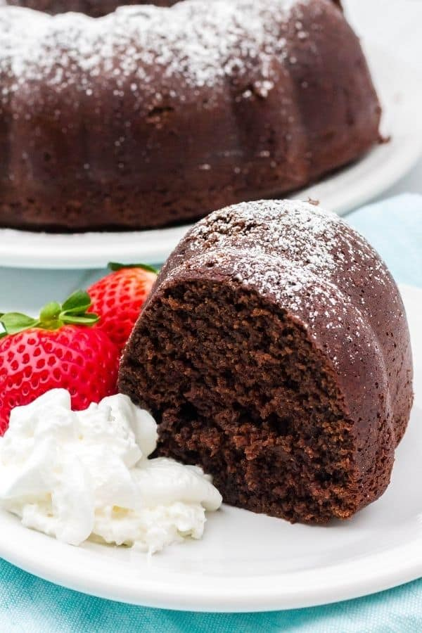

<hr class="hr">
<div class="recipe-grid mt-4">

  <div class="row category mb-4">
    <h2>Dessert</h2>
  </div>
  <div class="row">
    <div class="col-md-4 col-sm-12">
      <a href="./recipes/chocolate_blackout_cake.html">
        <figure>
          
        </figure>
        <figcaption>Chocolate Blackout Cake</figcaption>
      </a>
    </div>
    <div class="col-md-4 col-sm-12">
      <a href="./recipes/classic-jewish-sugar-cookies.html">
        <figure>
          
        </figure>
        <figcaption>Jewish Sugar Cookies</figcaption>
      </a>
    </div>
    <div class="col-md-4 col-sm-12">
      <a href="./recipes/devils-food-cake.html">
        <figure>
          
        </figure>
        <figcaption>Grandma Ruth's Devil's Food Cake</figcaption>
      </a>
    </div>
  </div>